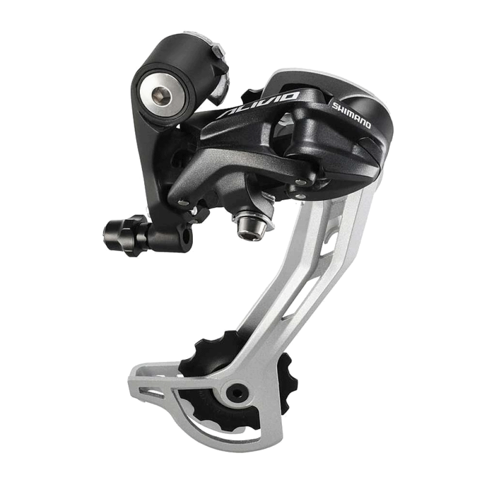

← Назад к велосипеду
Переключатель Shimano
Подробные технические характеристики компонента

Характеристики:
Диаметр:
29 дюймов (622 мм)
Материал обода:
Двойной алюминиевый alloy 6061
Количество спиц:
32 спицы из нержавеющей стали
Втулка:
Промышленные подшипники, ось 15х110 мм Boost
Совместимость:
Дисковые гидравлические тормоза